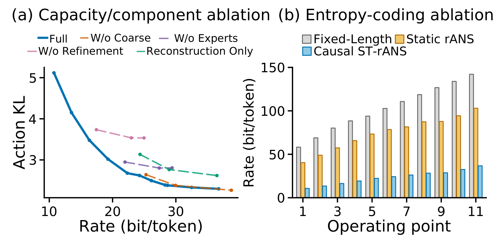
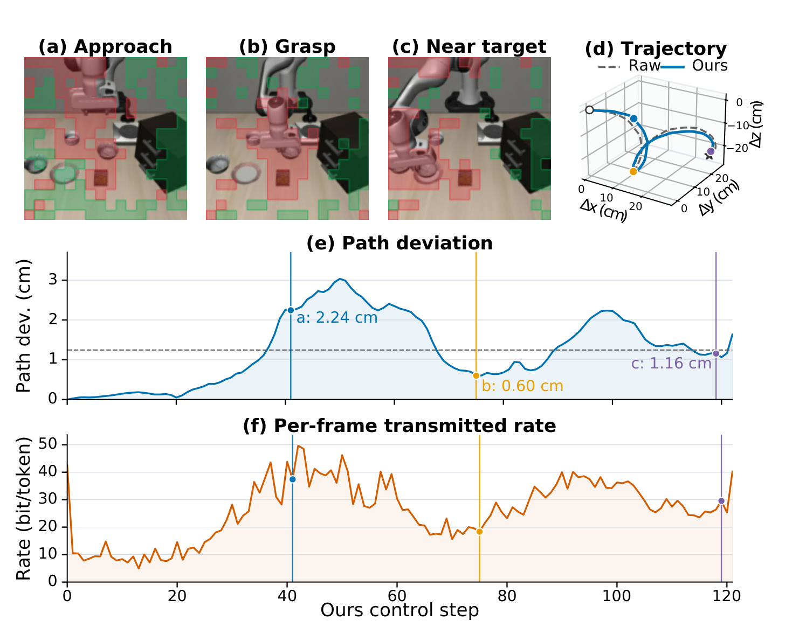

第一作者 · IEEE RA-L 在审 · 仿真评估
SplitVLA-Codec
面向 VLA 边云协同推理的决策敏感中间特征压缩。
研究问题与模块结构
在边云切分推理中，高维视觉中间特征会带来较大的传输负担。该研究在冻结 VLA 主干的条件下，学习面向下游决策的特征编解码器，分析通信量、策略偏差和闭环任务表现之间的权衡。
通过受控 token 扰动构建决策敏感度监督，将 token 分配至粗量化、基础量化和残差细化路径；结合指令条件共享—专家码本与因果时空 rANS 编码，将视觉接口特征编码为可传输的比特流，并在服务端重建。

个人工作覆盖方案设计、特征采集、编解码器训练、压缩基线实现、匹配初态的成对闭环评测，以及性能与部署开销分析。
OpenVLA × LIBERO 闭环结果
压缩比：2273.9×；成功率变化：−2.5 pp。
四个套件的宏平均。ΔSR 按未舍入的成对结果计算。
| 套件 / 任务 | Raw SR (%) | Codec SR (%) | ΔSR (pp) | 码率 (bit/token) | 压缩比 |
|---|---|---|---|---|---|
| Spatial | 81.8 ± 2.1 | 81.2 ± 2.5 | −0.7 ± 0.6 | 30.2 | 2158.5× |
| Object | 75.0 | 66.0 | −9.0 | 29.8 | 2186.5× |
| Goal | 75.0 ± 2.2 | 76.2 ± 2.9 | +1.2 ± 4.0 | 29.7 | 2189.8× |
| LIBERO-10 | 50.8 ± 1.5 | 49.2 ± 3.8 | −1.7 ± 2.3 | 24.8 | 2619.4× |
| Overall | 70.7 | 68.1 | −2.5 | 28.6 | 2273.9× |
参照为原始 FP16 中间特征。压缩比按应用层载荷、帧头和侧信息统计。每套件使用 200 个测试初态；Spatial、Goal 和 LIBERO-10 报告 3 次运行均值 ± 标准差，Object 报告单次结果。训练 / 验证与测试初态分离，Raw 与 Codec 使用匹配初态和随机种子；总体为四套件宏平均，ΔSR 按未舍入结果计算。
在这一工作点，四套件总体压缩比为 2273.9×，Raw / Codec 的宏平均成功率为 70.7% / 68.1%。实验结合成对闭环结果与轨迹分析，考察特征压缩对策略执行的影响。
相近低码率下的基线对比
| 方法 | 码率 (bit/token) | 验证重建 MSE ↓ | 验证动作 KL ↓ | 闭环 SR (%) ↑ | Raw 成功保留率 (%) ↑ |
|---|---|---|---|---|---|
| Raw FP16 | 65536.0 | — | — | 81.8 ± 2.1 | — |
| Binary quant. + rANS | 4096.0 | 0.0678 | 6.799 | 63.3 ± 1.2 | 70.9 |
| INT2 + rANS | 7721.3 | 0.0236 | 1.091 | 78.0 ± 3.5 | 87.4 |
| PCA + SQ + rANS | 28.1 | 0.1207 | 14.038 | 10.3 ± 2.5 | 11.2 |
| Product-RVQ + rANS | 29.9 | 0.1094 | 16.945 | 0.8 ± 0.8 | 0.8 |
| Scale Hyperprior + rANS | 29.1 | 0.0458 | 5.514 | 60.0 ± 2.3 | 66.8 |
| VQ-VAE + rANS | 28.1 | 0.0571 | 6.490 | 69.7 ± 3.0 | 76.6 |
| SplitVLA-Codec | 30.2 | 0.0501 | 2.116 | 81.2 ± 2.5 | 88.8 |
学习型压缩基线在闭环测试前选择约 30 bit/token 的工作点；Binary / INT2 作为直接低比特量化参照，其码率明显更高。闭环 SR 为 3 次运行均值 ± 标准差；成功保留率汇总 600 条成对轨迹，表示 Raw 成功时 Codec 也成功的比例。动作 KL 在独立验证集上离线计算。
采用重建 MSE、动作 KL 和闭环成功率共同评估压缩方法。在约 30 bit/token 的工作点，SplitVLA-Codec 的动作 KL 为 2.116，闭环成功率为 81.2%。
码率—性能权衡与组件消融

实验考察残差细化、专家码本、决策相关训练及粗量化路径的作用，并比较定长编码、静态 rANS 与因果时空 rANS 在同一组工作点上的实际码率。
π0.5 与 Octo 适配结果
在不同视觉接口和动作生成机制上分别训练适配的 Codec。π0.5 使用第三人称与腕部双视角；Octo 采用较低维的接口特征，在 ManiSkill 的动态随机背景下评估。
| 套件 / 任务 | Raw SR (%) | Codec SR (%) | ΔSR (pp) | 码率 (bit/token) | 压缩比 |
|---|---|---|---|---|---|
| Spatial | 96.5 | 96.5 | 0.0 | 66.8 | 490.5× |
| Object | 97.5 | 99.0 | +1.5 | 55.1 | 594.3× |
| Goal | 98.5 | 99.0 | +0.5 | 68.6 | 477.4× |
| LIBERO-10 | 95.0 | 89.5 | −5.5 | 56.9 | 576.4× |
| Overall | 96.9 | 96.0 | −0.9 | 60.2 | 544.4× |
π0.5 码率为第三人称与腕部两路视觉流实测 rANS 码率的平均值；每套件采用 200 次成对最终测试。
| 套件 / 任务 | Raw SR (%) | Codec SR (%) | ΔSR (pp) | 码率 (bit/token) | 压缩比 |
|---|---|---|---|---|---|
| PullCube | 92.0 | 85.0 | −7.0 | 85.9 | 143.0× |
| PushCube | 91.0 | 86.0 | −5.0 | 85.1 | 144.3× |
| Overall | 91.5 | 85.5 | −6.0 | 85.5 | 143.6× |
Octo 在 PullCube / PushCube 上采用每任务 100 个固定测试初态。码率和压缩比在最终测试轨迹上统计，两项任务的总体 Raw / Codec 成功率为 91.5% / 85.5%。
部署计算开销与通信评估
| 指标 | 参照 / 增量 | 说明 |
|---|---|---|
| Raw OpenVLA 动作生成 | 165 ms/action | 实测参照 |
| Codec 新增计算 | +3.12 ms/frame | 约为参照耗时的 1.9% |
| 发送端 / 接收端计算 | 2.38 / 0.74 ms | 集成路径计时 |
| Codec 参数 | 35.9 M | 约为完整 OpenVLA 参数量的 0.48% |
| 静态存储 | 308.8 MiB | 包含码本与 rANS 查表状态 |
新增计算耗时直接取集成 Codec 路径与 Raw FP16 路径的延迟差；单模块计时与整条集成路径的计时分别记录。
| 链路设置 | Codec | Raw FP16 |
|---|---|---|
| 100 Mbps · 无丢包 | 17.68 ms | 8.95 s |
| 200 Mbps · 无丢包 | 17.64 ms | 103.08 ms |
| 300 Mbps · 无丢包 | 17.63 ms | 74.42 ms |
| 1 Gbps · 无丢包 | 17.61 ms | 34.69 ms |
| 300 Mbps · 0.1% 丢包 | 17.65 ms | 87.96 ms |
| 300 Mbps · 1% 丢包 | 17.93 ms | 94.41 ms |
通信评估结合实测发送 / 接收计算与分包级 FIFO 网络仿真，计时范围为发送端特征就绪至接收端重建。输入为独立验证轨迹，采用 10 Hz 特征流、1200 B 包载荷、40 B 包头、10 ms 单向传播、2 ms 非负高斯抖动、3 个确定性种子及独立丢包重传模型。100 Mbps 时，Raw 负载超过链路容量，队列积压使时延上升。
一次成功轨迹中的编码与动作
